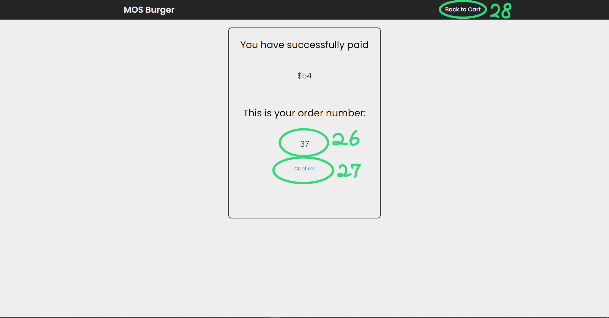

In the above image, Circle 1 is a button for you to access to the home page,
Circle 2 allow you to switch language for better accessibility, Circle 3 is a drop menu for you to
access the through the page, Circle 4 are the container for every item.
After clicking any item in Circle 4 in the previous image, the details of the selected item will be shown
on the screen, and Circle 5 will be the customization options for your preference.
In Circle 6, it is the beverages selection portion for you to choose on, and you have to choose one of them.
And in Circle 7, it will be the last part of the selection, which is the set preference, and you must choose a set as well, and nonetheless,
Circle 8 is a add to cart button for you to place your order into your shopping cart.
As if you did not chose either of the required preference, an error message will be shown as Circle 9, and as long as
you selected the required preference, the item will be add to your cart successfully.
And the counter above thhe shopping cart symbol will be changed dynamically, whenever you placed a new order,
as Circle 10 shows. While as well as clicking the button will lead you to the shopping cart page.
After you clicked on the shopping cart button, it leads you to the shopping cart page. Circle 11 is the item you have ordered,
Circle 12 allows you to remove the item, or changing the quantity of the entire set.
Circle 13 is the space for you to enter Promotion Code, in order to enjoy our limited discount.
Circle 14 is the check out button, once pressed, it will take you to the receipt of your meal, as you have paid the meal already.
Those two Circle 15 allows you to return back to our home page.
In Circle 16, it is showned as not signed in as default only if you sign in to our member system, and you can collect your points.
Circle 17 will brings you to the member page, for you to check your informations.
When you opened up member page, Circle 18 is for you to enter your member ID and your password to login by clicking the button at Circle 19,
and Circle 20 allows you to go back to your shopping cart.
Once signed in, your personal information will be displayed, Circle 21 is your current points, Circle 22 is your five recent records,
and Circle 23 will be your personal informations, and you can sign out by pressing the button in Circle 24, or go back to the cart using the button in Circle 25.

This page will be shown when you checked out using the check out button in the shopping cart page, and you can collect your meal by showing your order number in Circle 26,
and you can return to the main menu using the button in Circle 27, or go back to your cart using the button in Circle 28 if you want.